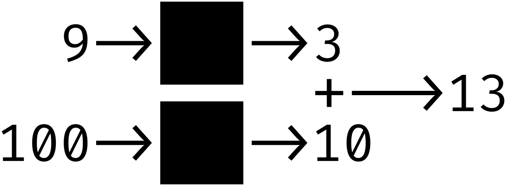

Estrutura e Interpretação de Programas de Computador
Anotações do Livro
Structure and Interpretation of Computer Progams, e do curso MIT 6.001 de 1986.
A Ciência da Computação: Uma Questão de Nome
O nome "Ciência da Computação", embora a palavra "ciência" (do latim
scientia) expresse o conceito de conhecimento sistematizado e
objetivo, está mais relacionado à ARTE. O mesmo ocorre com a palavra
"computação" (do latim computatio), que traz a ideia de
computar e utilizar computadores, ou de calcular e fazer cálculos. No
entanto, essas palavras não capturam o verdadeiro espírito da área. A
Ciência da Computação está muito mais ligada a fazer arte com o
conhecimento ou instruções imperativas do que a cálculos e máquinas.
Conhecimento da Matemática vs da
Ciência da Computação
O conhecimento matemático é um conhecimento
declarativo, — O que é verdade? — veja o
exemplo:
Já o conhecimento da
ciência da computação
é imperativo, — Como fazer? — veja o
exemplo:
Para encontrar uma aproximação da raiz quadrada de X:
Faça uma estimativa G.
Melhore a estimativa calculando a média entre G e
X/G
Continue aprimorando a estimativa até que ela seja suficientemente
precisa.
Procedimento e Processo
O procedimento é a descrição estática de como resolver um problema (o
"plano" ou "receita").
O processo é a execução dinâmica desse plano pelo computador (o "ato
de cozinhar" seguindo a receita).
Durante o estudo da
Ciência da Computação, o foco está em descrever procedimentos (discrições) que gerem
diferentes tipos de processos (execuções), controlando seu comportamento
para atingir os resultados desejados.
Linguagens de Programação
Linguagens de programação são sistemas de notação usados para criar
programas. Aprender sua sintaxe é relativamente simples, mas dominar a
aplicação criativa e eficiente dessas regras exige prática. À medida que
os programas crescem, aumenta a complexidade.
Essas linguagens são ferramentas para formalizar conhecimento imperativo
através de procedimentos computacionais. Essas linguagens devem incluir:
Elementos primitivos: Elementos básicos (dados simples e procedimentos
simples).
Meios de Combinação: Regras para construir estruturas complexas a
partir das primitivas.
Meios de Abstração1: Mecanismos para tratar estruturas complexas como primitivas,
permitindo que continuemos a construir sobre elas.
Técnicas de controle de complexidade
A
ciência da computação
não lida com objetos reais, mas com objetos virtuais2. Esses objetos são imaginados ou idealizados para representar
conceitos e sistemas complexos de forma simplificada. Não há distinção
significativa entre o que é possível construir e o que é possível
imaginar, desde que se tenha o conhecimento necessário para transformar
a ideia em realidade.
Abstração de Caixa-Preta
A abstração de caixa-preta é uma técnica fundamental na computação e em
outras engenharias. Ela simplifica a manipulação de sistemas complexos
ao ocultar detalhes internos do funcionamento de um processo, expondo
apenas suas interfaces: as entradas e saídas. Esse conceito facilita a
compreensão, reutilização e ampliação de sistemas, permitindo que cada
caixa seja tratada como uma unidade funcional
Exemplos práticos
Aqui, o método usado para calcular a raiz quadrada é abstraído como
uma caixa-preta: você sabe o que entra e o que sai, mas não precisa
entender os detalhes do cálculo.
A técnica permite que sistemas sejam escalados sem aumento
significativo na complexidade. Por exemplo:

As caixas-pretas podem conter outras caixas-pretas.
Generalização e Operações Genéricas
Outra perspectiva da abstração de caixa-preta é sua utilização para
criar operações genéricas. Um exemplo comum são as bibliotecas
disponíveis em linguagens de programação. Essas bibliotecas são grandes
caixas-pretas compostas por várias outras caixas menores, que encapsulam
funcionalidades reutilizáveis. Elas permitem que desenvolvedores foquem
na solução de problemas de alto nível, sem se preocupar com os detalhes
de implementação subjacentes.
Interfaces Convencionais
Outra técnica é a das Interfaces Convencionais
1 A abstração é uma técnica ou conceito
que permite "esconder" detalhes. Por exemplo, quando chamamos um
"carro" de carro, estamos usando uma abstração. Essa palavra
generaliza um conjunto de elementos, como motor, volante, bancos, e
outros componentes, que, juntos, formam o objeto complexo que
conhecemos como carro.
Assim, abstração ajuda a focar no conceito geral, sem se perder nos
detalhes técnicos de cada parte. Na prática, a abstração é essencial
para controlar a complexidade, permitindo que elementos complexos
sejam tratados como primitivos. Isso possibilita construir sistemas
ainda mais sofisticados, baseando-se em camadas de abstração. Por
exemplo, na programação, funções ou classes encapsulam detalhes
internos, expondo apenas o necessário para quem as utiliza.
2 No contexto filosófico, o real e o
virtual são formalizações que diferenciam o tangível do imaginário. Na
ciência da computação, lidamos com sistemas idealizados, abstraídos e
tratados como se estivessem numa "caixa mágica". Essa "caixa" é uma
metáfora para sistemas computacionais que parecem possuir uma espécie
de "espírito", capaz de executar as ideias previamente idealizadas e
definidas por nós. Por meio dessas abstrações, é possível simplificar,
organizar e manipular sistemas complexos, permitindo que o foco esteja
em como esses objetos interagem e se comportam, em vez de nos detalhes
técnicos de sua implementação interna.
Caso deseje aprofundar-se nessa discussão filosófica, aqui estão
algumas fontes relevantes:
Curso Online de Filosofia (COF): Aula 7, por Olavo de
Carvalho em 16/05/2009